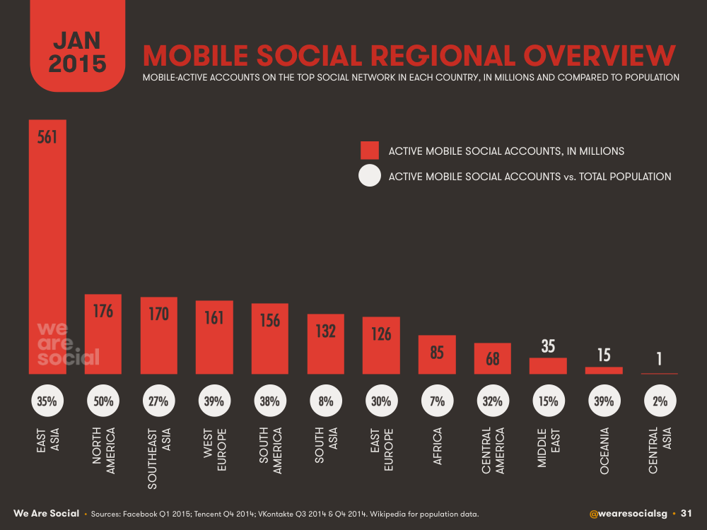

© 2017, LITAO. All rights reserved. labas@litao.lt
These are questions that people should ask, but often don’t. We’re laying them out here for you, from the big-picture to the nitty-gritty. Let us know if a question you have belongs to the list.
China in the 21st century is an emergent superpower still catching up to its own strength, an authoritative bureaucracy in the midst of organizing chaos—though it’s already a strong player on the world stage, it still has ample room to grow. China has been the world’s second largest economy by GDP since 2010, when it surpassed Japan. When GDP is adjusted for Purchasing Power Parity, though, China is officially the world’s largest economy, according to the International Monetary Fund—meaning the country’s consumers have more individual purchasing power than anywhere else in the world. And there are a LOT of consumers: one out of every five people in the world is Chinese. You may have been hearing that China’s current GDP growth is the lowest it’s been in decades (2016’s was 6.7%). But that’s only in comparison to its average growth rate of 10% per year since economic reforms in 1978; it’s still doing extremely well in real terms (the U.S. GDP growth for 2016 was less than half of China’s). Slowing down is part of a natural process after so much rapid growth. Much of the slowdown also has to do with China’s shift from being a cheap manufacturer of goods (now that goes to countries like Vietnam or Mexico) to more of a major consumer with a huge and rapidly growing middle class. According to the 2015 Credit Suisse wealth report, China has a larger middle-class adult population than the United States. Read more: Global Wealth in 2015: Underlying Trends Remain Positive With such a large sector of new potential consumers, China is really one of the most important countries in the world right now in business as well as politics.
Related to the above answer, a huge emergent middle class—the largest in the world now—means also middle class values. Western companies used to only target China’s uber-rich (China DOES have a lot of millionaires); but Chinese clients are now much more diverse, and no longer only in coastal cities. So what do Chinese people want? First, there’s no one China or Chinese person: it’s a huge country with distinct regions and regional preferences. China—with its 35 distinct administrative regions, 56 officially-recognized ethnicities, and over 200 mutually unintelligible dialects—is as complex a country as you can get. The differences in consumer appetite between one region of China and another are comparable to differences between countries elsewhere, not to mention the differences between Tier-1 cities (Beijing, Shanghai) and Tier-3 (Ziyang, Leshan). You really have to know who you’re targeting. But there are certain trends we can count on. According to McKinsey’s 2016 China Consumer Report, which surveyed 10,000 consumers across 44 cities in China, one huge trend that is already underway but will keep growing is the shift from mass market products to premium. Read more: Here comes the modern Chinese consumer  Local brands will always best foreign ones for the mass market share, but Chinese brands aren’t always as trusted for premium products, especially for cosmetics and health. 38% of surveyed consumers listed “organic/green food” as among their top three criteria—even though China itself doesn’t have a credible organic certification, meaning foreign certifications are more important than ever. China’s consumers are also growing younger, and as such, more Westernized than ever before. They check on-line reviewsand are more likely to try new things—including specialized items like laundry softeners, unused by their predecessors. Read more: Mapping China's middle class Consumer strategies that used to work—appealing to a wide range of people with a standardized product—don’t anymore. Chinese people are becoming much more particular with what they like or not, and strategies need to be tailor-made—but the good thing is that compared to previous generations, they spend a higher percentage of their earnings—so if they really like something, they won’t necessarily save for later.
Local brands will always best foreign ones for the mass market share, but Chinese brands aren’t always as trusted for premium products, especially for cosmetics and health. 38% of surveyed consumers listed “organic/green food” as among their top three criteria—even though China itself doesn’t have a credible organic certification, meaning foreign certifications are more important than ever. China’s consumers are also growing younger, and as such, more Westernized than ever before. They check on-line reviewsand are more likely to try new things—including specialized items like laundry softeners, unused by their predecessors. Read more: Mapping China's middle class Consumer strategies that used to work—appealing to a wide range of people with a standardized product—don’t anymore. Chinese people are becoming much more particular with what they like or not, and strategies need to be tailor-made—but the good thing is that compared to previous generations, they spend a higher percentage of their earnings—so if they really like something, they won’t necessarily save for later.
Unlike Europe, where almost everyone with a higher education speaks fluent English, most businesspeople in China don’t—not even the big bosses, and certainly not most suppliers and manufacturers. That’s where we come in. If you have a great product or service, we help you understand how to place it in China and can be with you the whole way from strategizing to network-building to that final contract-signing—and beyond.
Not unless your friend also happens to be a part-time diplomat, businessperson, and master negotiator. So much of interpretation is beyond language itself but about tone, cultural context, and prior experiential knowledge. If you simply allow anyone to translate your company’s documents, be prepared for miscommunication, missing information, or even too much(!) information, all at detriment to your cause.
Unless your product truly has incredible margins (that locals would take advantage of at which would be a loss to you), the Chinese really prefer working with people who understand China and Chinese. You need someone Chinese-savvy by your side to navigate the market. Even simple things like money transfer and payment expectations differ in China. If you can’t establish yourself permanently in China, you’ll need someone suppliers and distributors can reach easily. You’ll also need to operate with on on a whole different social media marketing scheme, with China-specific mobile platforms (see What is WeChat?); traditional web-sites are not nearly as important in China as mobile. On the administrative side, with China’s complicated and ever-evolving import/export regulations and labor laws, foreign companies are often left out of the loop when the rules change. For employees, the Chinese government obligates employers to file staff information with relevant bureaus, maintain files, and pay social benefits and taxes for their employees. So even if you decide to sell on your own, if you want any legal Chinese employees, you’ll need a labor agency. Chinese regulations aren’t always by the book, either. Sometimes the official web-site says one thing, but word-of-mouth says another. Which one do you think works? If your product is not approved despite thinking you met all the requirements, it takes Chinese connections and digging to even understand why.
As local experts, consultants are your modern-day guides and gurus: part-lawyer, part-interpreter, part-coach. We are problem-solvers but also problem-preventers, with culturally-sensitive solutions to market research, relationship-building, and strategy. We make things clear for you to take the next step. Consultants give common sense business advice, backed up by first-hand research, experience, and connections. Here at LITAO, though, we do more than give advice: we actually help you implement our suggestions. A China consultant is a hands-on guide for everything that doesn’t make sense in this country—culturally, linguistically, logistically, and legally. We’re different from company agents or representatives because we don’t just follow the status quo for business; we help you strategize for long-term growth. And while interpretation is one of our services, helping you understand the language and negotiate with business partners is only one small part of the services we provide. All cultures have had their advice-givers: from shamans and medicine men to viziers and general counsels. Shamans take information from other worlds to use in this one. Premiers and viziers counsel their heads of state. General counsels give legal advice from decades of litigation experience. All of them act as intermediaries between experience and decision. All of them help a tribe, country, or company become better versions of themselves.
You need to think locally: know which part of the China market you want to expand in and not just China as a whole. Once you know that, we can help you develop your key message to consumers. Other than finding a trusted company to give you advice and consult you locally, we also recommend registering your brand and trademark as much beforehand and in as many relevant categories as you can, as China has a first-to-file trademark system. That’s why billionaire Donald Trump registered for ownership of Trump as a trademark in construction services in 2006—even though as of today, his hotel brand has not entered China. Read more: The Trump brand wins a battle in China According to the New York Times, Trump owns about 29 of the 46 “TRUMP” trademarks in China. A Chinese court recently upheld the trademark, banning the use of the name by other companies ownership in the construction sector. Other products, like popular brand Trump Toilets, may also be legally liable questionable—but none of this would have happened if top lawyers for one of the wealthiest men in the world hadn’t taken precautions. Read more: Trump victory china real estate trademark
“Language is not only how we express our thoughts, it is also how we create our thoughts.” —Chin-Ming Chu We often hear clients say something like, “I don’t understand what this person’s answer is. I asked an open-ended question and he answered ‘yes.’” A lot of that comes down to knowing how to ask the right question. Not only is there a language barrier, sometimes the Chinese don’t understand your specific standards—“good enough” may well be satisfactory, and they may only want to assure you everything is alright even when it’s not—especially if they can fool a newcomer. Business negotiation means asking specific, tailored questions so the answerer cannot escape into vagueness. (Sometimes to avoid saying a direct “no” to a request, the Chinese will simply say “we’ll see” or delay.) You have to know the key words before you ask—this is where we can help. The Chinese also don’t necessarily think in a linear fashion, so don’t always expect proposals to go from A to B to C or a business plan with a distributor to adhere strictly to dead-line. Doing business in China often means going in circles, many meetings just to get to know you; until the distributor trusts you (a.k.a. you are friendly, if not friends), business is not likely to happen. That’s why guanxi (below) are so important in China. Chinese businesspeople who have worked with us in the past know they can trust us, so they will also trust you.
Everyone here knows: To do business in China, you need to have two things: guanxi and money. Just money is not enough. “Guanxi” means personal connections: that network of links between people who know each other and would do favors for each other, in business and in life. In China, a land where almost everything can be faked, so much depends on personal trust. Flesh-and-blood people are more reliable than words on-line and less likely to disappear—especially if you’ve known them for a while. Guanxi is so important in China that some Chinese corporations will actually hire and keep staff to perform solely the role of knowing someone or being in contact with someone who needs to be known. This kind of position definitely doesn’t exist in Western companies! We have spent years cultivating trust with all kinds of people through face-to-face meetings and a history of great work. Learn about our guanxi.
Due diligence is really about making sure any company is what it says it is. This ranges from whether or not the company actually exists to whether they have positive feedback, regular employees, and good finances; in the course of our work, we’ve found fake copy-cat companies before with offshore accounts, or companies with web-sites and no manufacturing facilities, or even companies borrowing others’ offices. If you don’t check first, there is no way any court can get the money back for you. Assume the worst to guarantee the best. LITAO once saved a company 30,000 EUR through noticing the company name on the invoice did not match the one they gave elsewhere. The above is financial or operational due diligence, and suppliers certified with the ISO (International Organization for Standardization) may be qualified on paper, but real-time experience and word-of-mouth reputation is even better. You need experienced people to verify if documents, including a business license, are real, as well as to be aware of common scams. The second kind of due diligence actually happens AFTER you’ve found a supplier you want to work with. This is factory-level product QC, and again requires regular local visits to ensure quality; even if the first sample batches are okay, the factory may cut costs in the future so batches must be checked regularly pre-shipment to ensure product quality.
Owned by Chinese tech giant TenCent, WeChat is China’s answer to Facebook, Skype, WhatsApp, Apple Pay, and traditional web-sites—combined. It can do everything from simple and group chats to transferring money, shopping, playing games, ordering food, paying bills, hailing cabs, and following your favorite companies. As of 2016, the app has grown 35% in the last year to 850 million active monthly users and 1.1 billion registered ones, almost all of them in China. The numbers alone don’t show how dedicated users are though: the app has ~750 million DAILY users, half of whom use the app at least 90 minutes a day. Also, 85% of users are between the ages of 22 - 55, a core consumer demographic. Communicating by WeChat, not e-mail or phone, is the preferred method even for business as well as personal matters. So much of China, especially the young and new middle-class consumers, do their looking, shopping, and talking on mobile, which is becoming increasingly more important than traditional web-sites. East Asia in particular loves mobile social network accounts:  WeChat also has an enterprise option for companies to open Official Accounts, which people can then follow for news, promotions, and group chats. Many companies actually test apps by launching an official WeChat account first to see if they’re popular. Here is a brief data report from WeChat itself.
In China, black and white pictures are only used for deceased people, so of course you wouldn’t want that on your web-site. This is an example of everyday cultural context you won’t find in any guidebook on China, but only case by case.
Because we believe in teaching people how to fish for themselves.
All of the below are great information portals for doing business in China. They still can’t beat first-hand, targeted research, but they’re a good start to understanding China.
GLOBAL SOURCES:
A great Q&A web-site on all things related to China manufacturing & sourcing (sample articles: 7 items you probably forgot to put in your contract with the factory; how much can I save by moving production from Europe to China?; as a new and small company, how do we choose from a myriad of suppliers who seem to make the same product?)
Written by a team of lawyers immersed in China’s legal system, this blog has lots of nitty-gritty details on bureaucratic procedures, intellectual property matters, and other China-specific business solutions.
This project funded by the European Union offers free consulting for small and medium-sized enterprises working in China.
The American Chamber of Commerce in Shanghai, besides being a local business network, also provides overview reports on markets, the economy, Chinese policy, and other business intelligence. Make sure to check out the Chamber of Commerce for your country, as well as the European Union Chamber of Commerce in China
A blog on Chinese negotiation solutions for Westerners doing business in China. Includes business deal warning signs, conflict management tips and other cultural broker advice.
Don’t just rely on the Western media’s portrayal of China. Caixin is China’s version of “The Economist” and China’s most widely read source of business and finance news—independent and significantly less biased than other local media, but more in-depth than international news sources.
A page in English provided by China’s highest executive body on guidelines and forms for doing foreign business in China.
Downloadable PDF link for “The Modernization of the Chinese Consumer” at bottom. McKinsey surveyed 10,000 consumers across 44 cities in China to establish current consumer trends.
Data in English provided from the National Bureau of Statistics of the People’s Republic of China. Provides statistical data at various regional and national levels, including consumer and producer goods and prices, industrial production, census, and market and industry surveys.